Hapkido
Hapkido is a Korean martial art that translates as coordinated energy way or universal energy way.
This 'soft style' is a complete martial arts system. It integrates kicking, hand techniques, patterns (series of pre-arranged moves), and redirection of another’s force through circular movements leading to joint locks and throws. Weapons practice, such as wooden sword and staff, are also included.
This program is designed to increase your physical health, flexibility, strength and balance, while improving confidence, and encouraging a more peaceful mind. Hapkido is an excellent art for self defense which focuses on physical and mental health while being in harmony with one’s environment. Students work alone and with partners on various skills. We practice the traditional 'internal style' art of Hapkido emphasizing fluid movement and follow through.
We are affiliated with the World Hapkido Federation founded by Grandmaster Kwang Sik Myung (Jason Mix's teacher).
We welcome people of all ranks in these classes, beginner through advanced, ages 6 through adult.
Hapkido Belt Level Requirements
To view or print belt level requirements for all Colored Belts and 1st Dan Black Belt, visit
Hapkido Belt Level Requirements.
A username and password is required which you can get from your instructor.
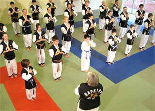 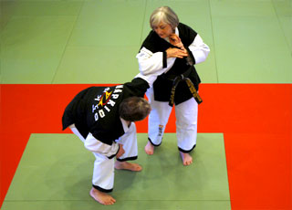 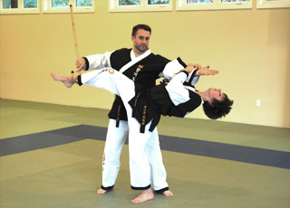 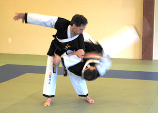
Martial Arts FUNdamentals
Tae Kwon Do and Hapkido are Korean martial arts. Tae Kwon Do translates as foot hand way and Hapkido translates as coordinated energy way.
Enso Center has expanded their Tae Kwon Do program into the new, fun and exciting Martial Arts FUNdamentals program.
While continuing in the tradition of the aerobic techniques of Tae Kwon Do, Martial Arts FUNdamentals adds rolling and falling exercises from Hapkido, self-defense techniques and promotes mental and physical well-being. This unique combination helps students realize their potential in martial arts and life.
The Martial Arts FUNdamentals program offers an enjoyable workout, in a safe environment. The class will continue to emphasize the tenets of courtesy, patience and right behavior.
We welcome people of all ranks in these classes, beginner through advanced, ages 6 through adult.
Martial Arts FUNdamentals
Belt Level Requirements
The Martial Arts FUNdamentals program focuses on the fundamental skills taught in Tae Kwon Do and Hapkido. Belt level promotion for this program is based on the same first four belt levels of Hapkido.
To view or print belt level requirements, visit Hapkido Belt Level Requirements. A username and password is required which you can get from your instructor.
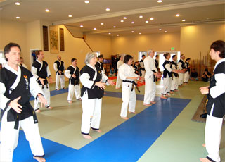 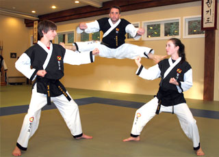 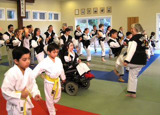
Tai Chi & Chi Kung
Tai Chi is a Chinese martial art that translates roughly as Grand Ultimate.
Tai Chi is practiced for strengthening and stretching the body, increasing energy (chi) flow, and calming the mind.
Tai Chi focuses on health of the whole person with a series of relaxed breathing and strengthening exercises. Patterns are practiced slowly, with emphasis on healthy joints and movement, with a strong, relaxed body & mind
We practice both the Yang style short form and a Korean Kwon Bup form. Advanced students may also learn Tai Chi sword.
We welcome people of all levels and physical abilities in these classes, children and adults.
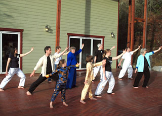 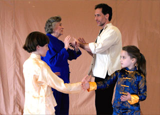
Weapons
The Weapons program teaches self-defense techniques with and against a variety of weapons emphasizing correct use and proper form.
Wooden practice weapons are used including Short, Middle and Long Staff, Long Sword & Knife.
Cane, Rope & Spear are also taught as additional weapons at advanced levels.
Benefits include improved strength, flexibility, focus, dexterity and awareness of surroundings.
No previous martial arts experience is necessary. We welcome people of all levels and physical abilities in these classes from age 12 through adult.
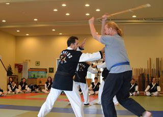 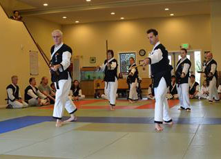 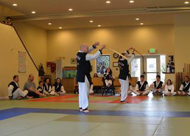
Special Programs
Options Self Defense Program
Self-defense is a complicated subject.
It is both an immediate response and an act of preparation.
It is physical, mental and emotional.
It reaches into every part of life because good self-defense is not just the art of fending off an attacker; it is the art of being an active part of the world in which we live.
It is a dynamic tool that helps us achieve goals.
It is important not to be perceived as threatening or offensive as well as to know appropriate responses to harassment.
Self-defense is intentionally taking control, both of yourself and of how others interact with you.
Enso Center offers seminars tailored to fit the specific concerns of individual organizations.
We combine demonstrations, community resources, physical self-defense instruction, practical applications, confrontation scenarios and verbal interaction to help participants become aware that there are always options available.
Participants will:
- Achieve an increased sense of self confidence
- Gain knowledge of community resources
- Learn effective physical self-defense
techniques
- Experience confrontation scenarios in a safe
environment
- Develop a personal self-defense plan
Seminars can be held at our main location in Redmond, your work location, or any other suitable location that you specify.
Enso Center Options Self Defense Flyer.pdf
To view the Options Self Defense Flyer, click on the link above, OR right click on the link above, and choose Save As... to save a copy of the flyer to your computer.
Archery
Archery Classes, Indoor and Outdoor
Instructor: Jay St.Charles, of Pacific Yew Longbows
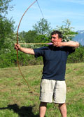Jay has spent his lifetime as a teacher, coach and tackle maker in the broad world of archery, with over 40 years as an archery professional. He has been a participant in the evolution of modern archery, as well as an avid student of its history.
"We'll visit archery's greatest challenge, guiding the arrow to the target by subtle use of mind, hand and eye. As individuals we'll pursue a goal which has fascinated archers of all cultures throughout history — shooting the perfect arrow. Also, over time we can explore different forms of traditional archery and find what might interest each of us most."
- Archery open to ages 13 through Adult. Children aged 8 - 12 may attend Archery WITH SPECIAL PERMISSION of the Instructor providing that they attend with a parent. BOTH PARENT AND CHILD MUST BE REGISTERED FOR ARCHERY.
- Enso Center members currently enrolled in martial arts programs receive an additional 20 percent discount.
- All high quality equipment will be supplied free of charge
- Must preregister, and pick your day(s) to attend — space is limited
- For more info, please contact Jay via email at webmaster@selfbow.com
or call 425-761-3696.
— register now for next monthly session
 |
Enso Center is certified through the National Field Archery Association |
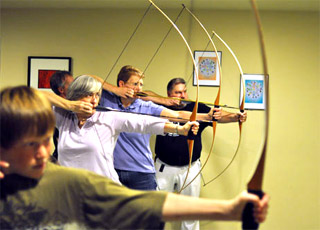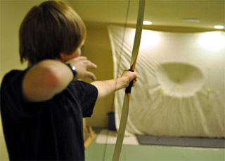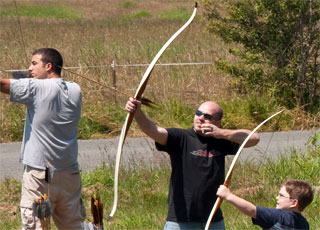